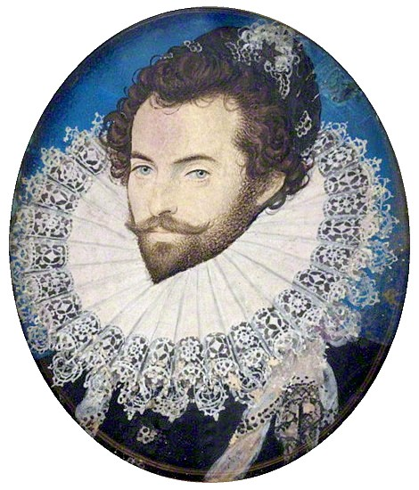

Historia
Procolonia, colonia, exploracion y ocupacion y que paso en los siglos XIX y XX
Costumbres y Tradiciones
En el Estado Delta Amacuro hay tres grupos humanos culturalmente diferenciados: los grupos indígenas waraos, araucanos y caribes; los criollos provenientes en gran porcentaje de la isla de Margarita y Cumaná; y los guyaneses.